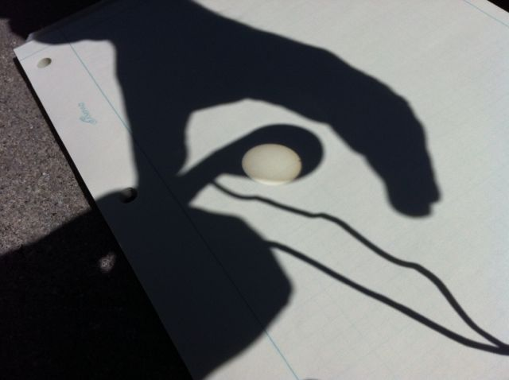
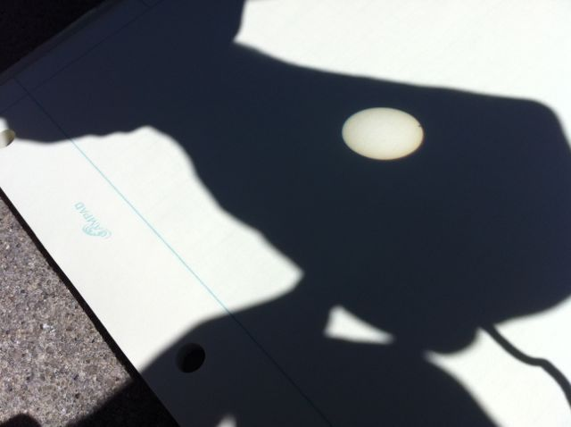
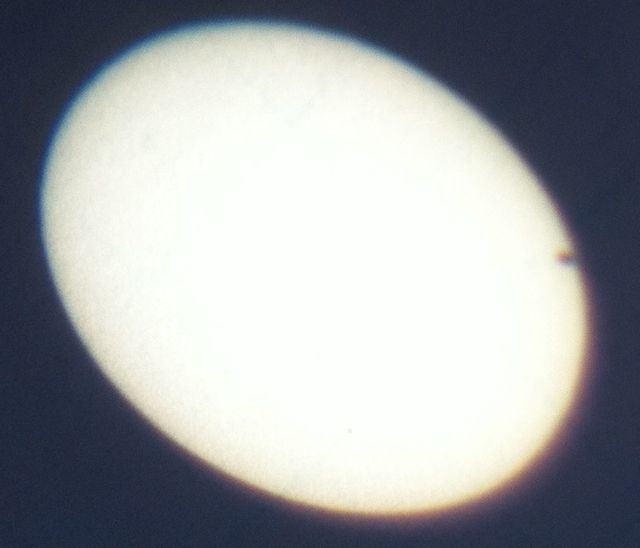

The Transit of Venus 2012 June 05 |
|---|
|
This is me using my Minolta Pocket 8x25 binoculars to show my friends a twice in a life time Transit of Venus on June 05 2012, a little after lunch time. To avoid looking at the sun, I used the shadow to align the binoculars and focus an image on a screen. |
|  |
|  |
|  |